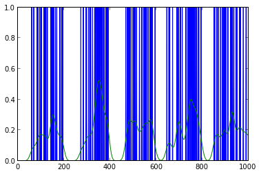
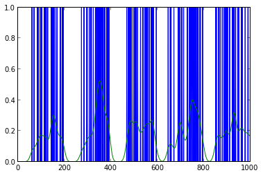
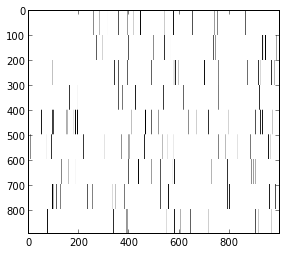

3. The ni.model.pointprocess Module¶
- class ni.model.pointprocess.PointProcess(dimensionality)[source]¶
A Point Process container.
Usually generated by loading from a file or via ni.model.pointprocess.createPoisson()
- ni.model.pointprocess.createPoisson(p, l)[source]¶
This generates a spike sequence of length l according to either a fixed firing rate p, or a repeated sequence of firing rates if type(p) == np.ndarray.
It creates a ni.model.pointprocess.PointProcess
Example 1:
p1 = ni.model.pointprocess.createPoisson(0.1,1000) p1.plotGaussed(20) plot(p1.frate)
 
p2 = ni.model.pointprocess.createPoisson(sin(numpy.array(range(0,200))*0.01)*0.5- 0.2,1000) p2.plot() p2.plotGaussed(10)
p2.plotGaussed(20) plot(p2.frate)

Example with multiple channels:
frate = (numpy.array(range(0,200))*0.001)*0.2+0.01 channels = 9 dists = [ni.model.pointprocess.createPoisson(frate,1000) for i in range(0,channels)] #for i in range(0,9): dists[i].plotGaussed(10) import itertools spks = np.array([dists[i].getCounts() for i in range(0,channels) for j in range(0,99) ]) imshow(-1*spks) set_cmap('gray')
Will generate:
(A plot of spikes)
ni.model.pointprocess.plotGaussed(np.array([dists[i].getCounts() for i in range(0,channels)]).mean(axis=0),20) plot(dists[0].frate)

- ni.model.pointprocess.getBinary(spikes, min_length=1)[source]¶
Gives back a binary array from an array of spike times. The maximum for each bin is 1.
- ni.model.pointprocess.getCounts(spikes)[source]¶
Gives back an array of spike counts from an array of spike times. If the output is suppsed to be a Binomial, use getBinary instead.
- ni.model.pointprocess.plotGaussed(data, width)[source]¶
p2 = ni.model.pointprocess.createPoisson(sin(numpy.array(range(0,200))*0.01)*0.5- 0.2,1000) p2.plot() p2.plotGaussed(10)